Lab 3: Time of Flight Sensors
ECE4160 Fast Robotics — Spring 2026
Connor Lynaugh
Lab 3 – Time of Flight Sensors
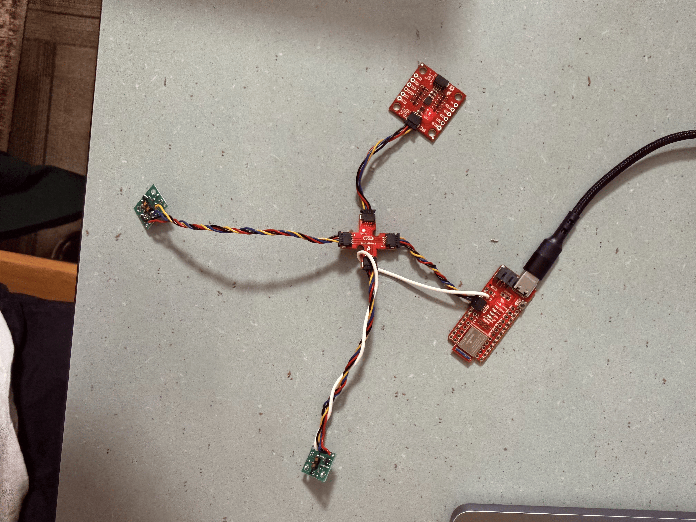
Objective
The goal of this lab was to integrate two VL53L1X Time-of-Flight sensors (ToF) with the Artemis Nano and the QWIIC connector board. After this lab the time of flight sensors will be positioned on the car in a manner such that one will face dead forward and the other will face perpendicularly centered between the two side wheels.
Prelab
Each VL53L1X sensor comes with the same default 7-bit I2C address of 0x29, meaning both sensors will respond to attempted communication and information registering. To fix this one sensor is held in shutdown state on startup while the other sensor’s address is manually overwritten in software to 0x30. Once this has been reassigned the shutdown pin is then brought high to bring the first ToF online again at the default 0x29 address. After this both sensors can operate simultaneously in parallel on the same I2C bus.
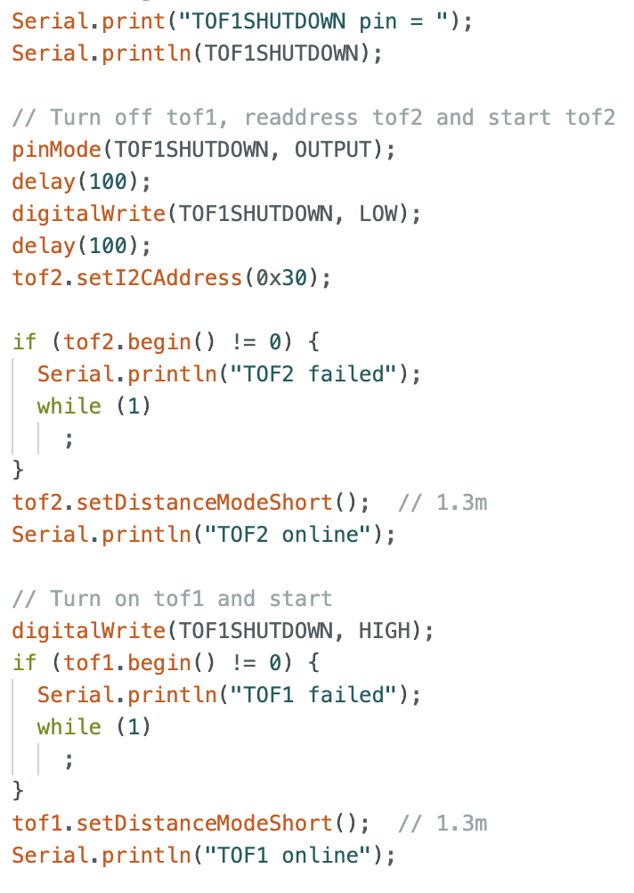
The forward facing ToF sensor is positioned to detect obstacles directly in front of the robot. The wheel side facing sensor is positioned to measure the distance to adjacent walls positioning and environmental understanding. Because there are only two sensors there are several situations in which obstacles may be completely missed: Obstacles that exist between the two sensors would fall outside of the effective view cones of both sensors. The same issue exists on the opposite side of the wheel facing sensor as well as in the back of the car. The actual surface that the sensor reads also affects the visibility, take the case the surface is highly angled.
Lab Tasks

Both ToF sensors were connected to the Artemis Nano using the QWIIC breakout board and the longer quick connect cables providing VCC (+3.3V), GND, SDA, and SCL. The ToF sensor designated as TOF1 at address 0x29 has its shutdown pin directly connected to the Artemis Nano pin A1 for turning the sensor off and on.
To validate I2C communication between the Artemis and the ToF sensors, I scanned for connected I2C devices on the serial bus. At first there were only two distinct devices: 0x69 the IMU and 0x29 the first ToF sensor. When adding the second sensor a third device was visible at 0x30.
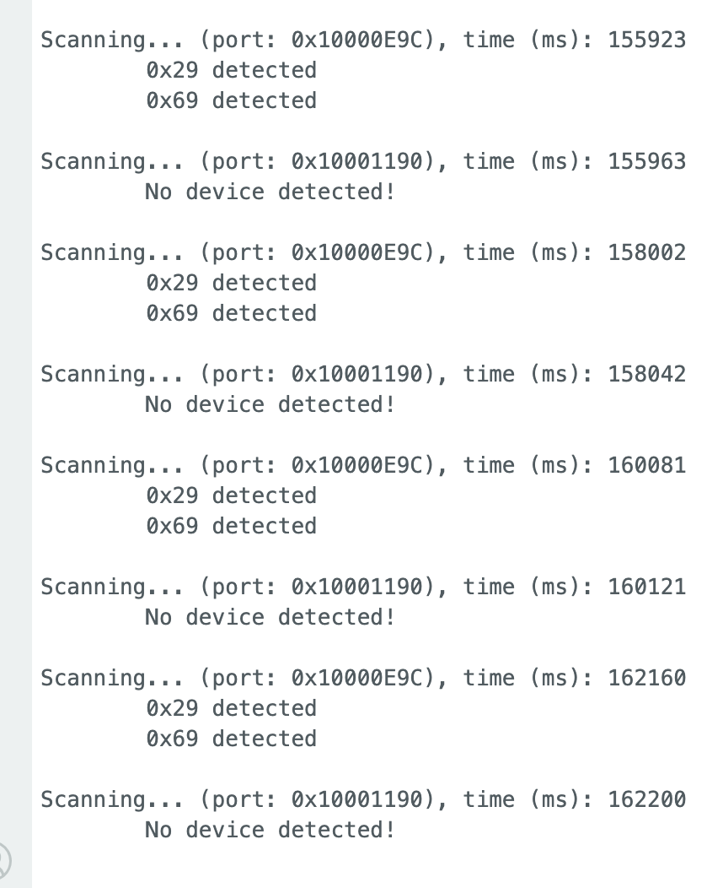
Both of the sensors were configured to operate in the short range mode as this provided reliable range with a smaller distribution of noise. The effective range in this mode is about 1.3 meters which is sufficient for most of the use cases I could think of for car stunts. If this changes though this is a simple line of code to change. Both of the sensors and the IMU were able to run simultaneously by integrating the ToF initialization and paging into the Lab 2 code. Data is collected over a set array size and passed over bluetooth to my main computer for post-processing and analysis. ToF sensor data is enabled by using startRanging() and read only when data is reported as ready at the appropriate register.
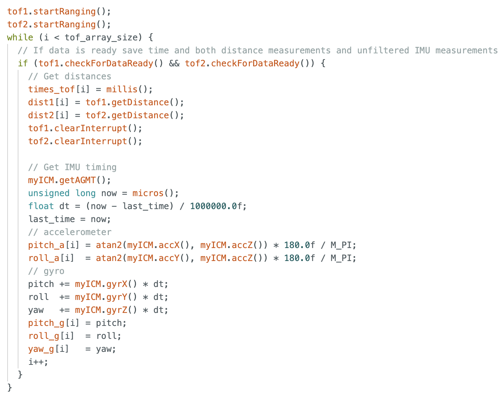
In the following examples the data is collected stationary on the left, and slowly moving awway on the right.
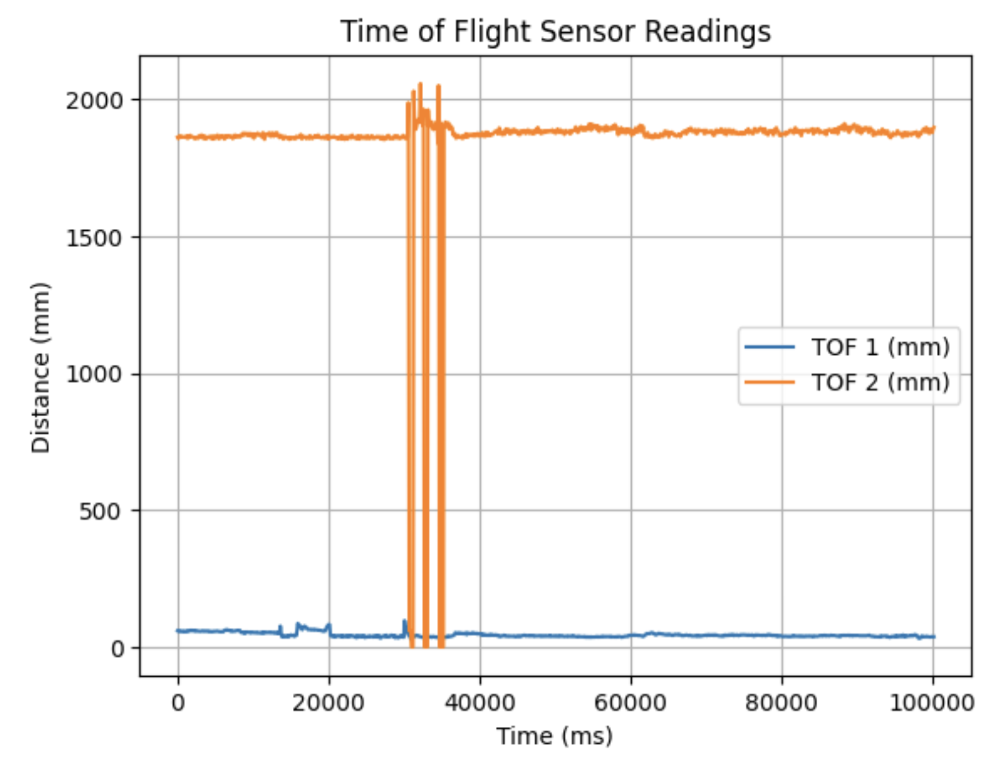
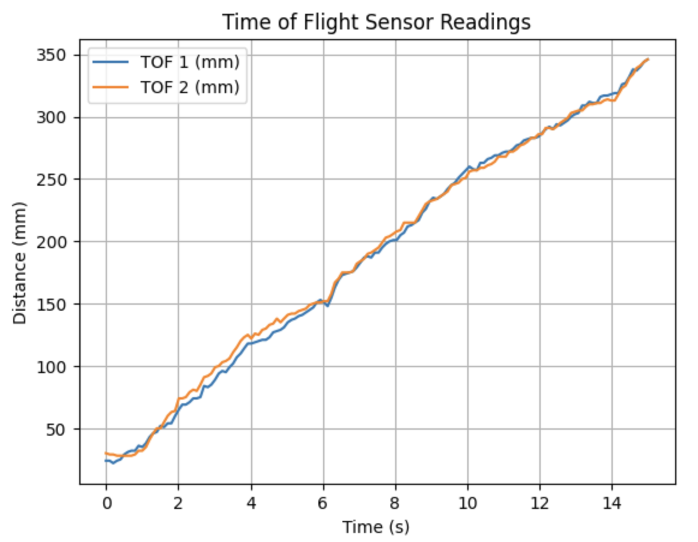
In order to measure the speed of which data can be collected from the ToF sensors, timestamps were printed directly into the Serial terminal in a loop while distance data printed as it became available.
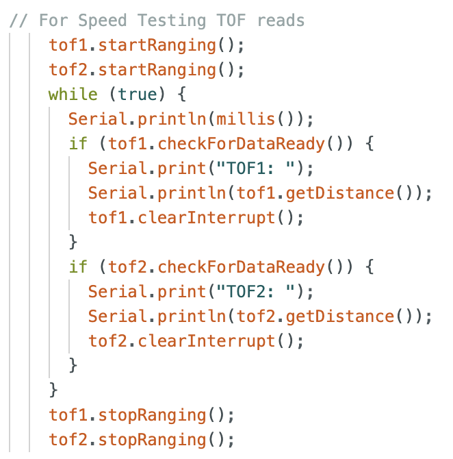
From the collected time data the sensors produced measurements at approximately 10Hz, which is significantly slower than the IMU which was producing samples at up to 275Hz. This demonstrates that the ToF sensors are actually the limiting factor to a general sensor update rate.
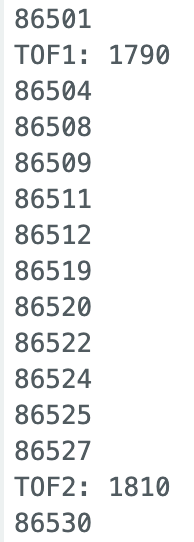
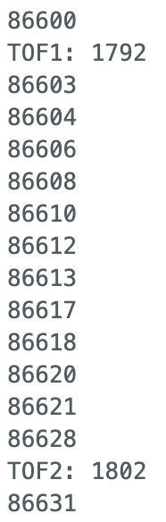
ToF distance data was transmitted from both of the sensors using Bluetooth and then plotted against time using a notification handler. In the graph you can clearly see the obstacle (my hand) moving to and from 100-200mm repeatedly. The spike is likely due to a moment where my hand escaped the view cone of the 2nd distance sensor and it detected the ceiling instead. Both sensors gave stable readings with only small fluctuations possibly due to neutral noise.
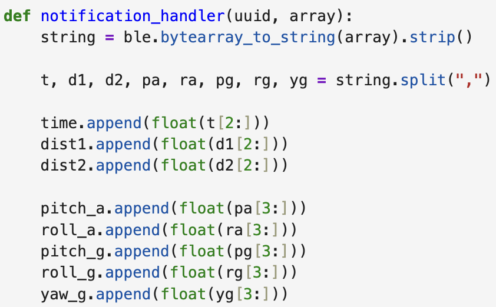
The ToF data was collected in parallel to IMU data. The raw data is sent over Bluetooth so both the raw data and the post filtering data is available. A low pass filter and a complementary filter are applied to the IMU data as was discussed in Lab 2.
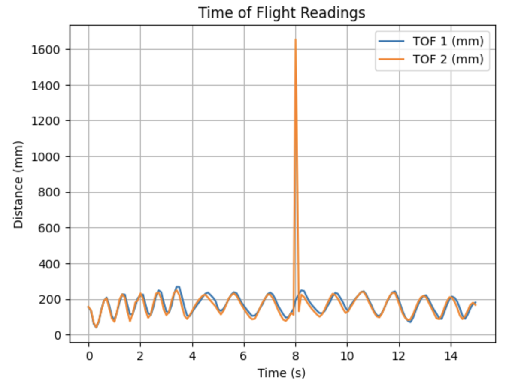
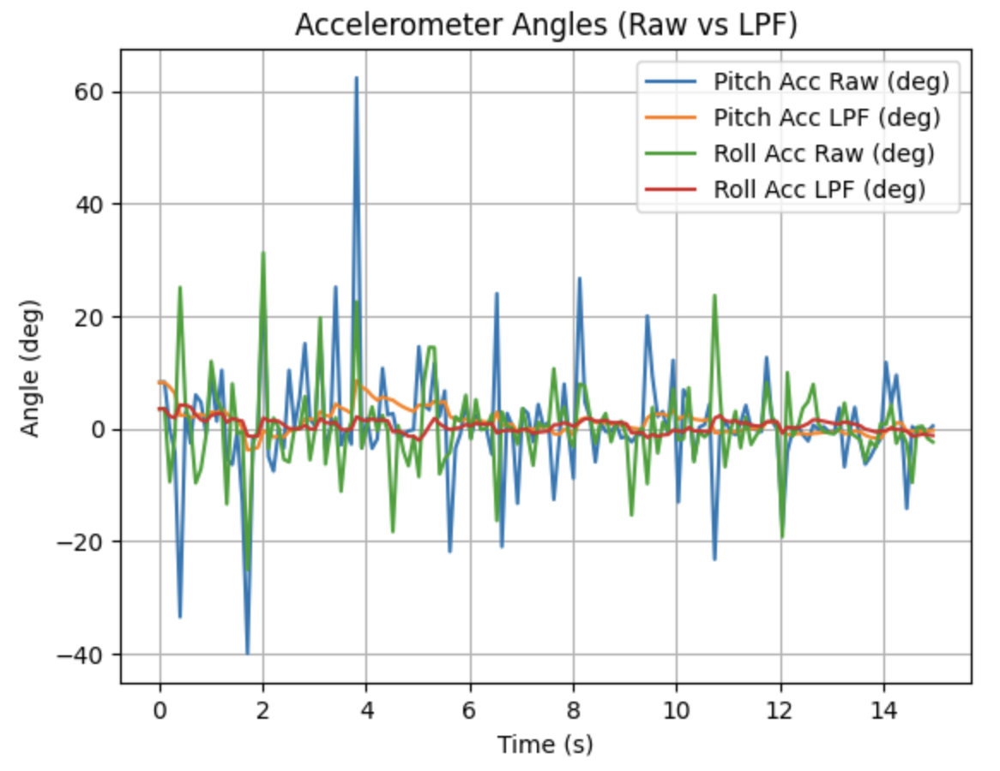
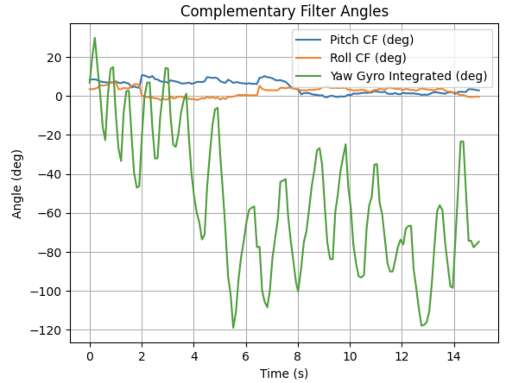
The addition of ToF sensors to the system has provided valuable distance measurements in two directions using just one I2C bus. While the IMU can provide high speed data the ToF sensors update more slowly, making the limiting factor the distance readings during data synchronization.
Acknowledgements
I worked with TAs and Professor Helbling to execute this lab fairly smoothly. I would like to thank the professor for sparing me an extra 850mAmp battery. ChatGPT was used to plot data in a more meaningful way in Jupyter Lab.